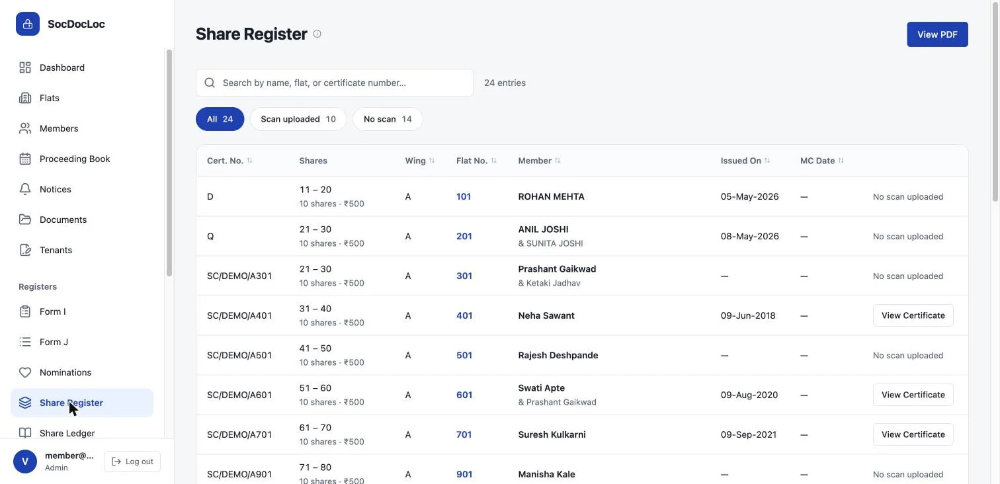

01 · 2026
SocDocLoc
Statutory registers for co-operative housing societies, moved off paper. Members verify their own records, auditors review online, and every register prints as the law expects.
8 wksspec to production
120flats live
Class Aaudit grade, both

